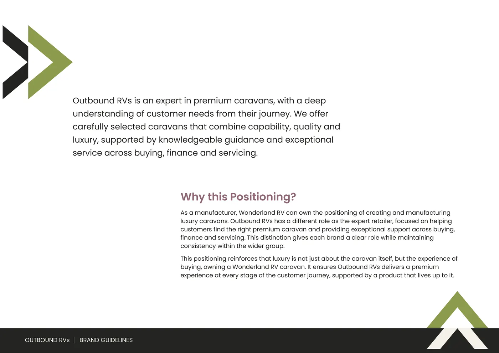
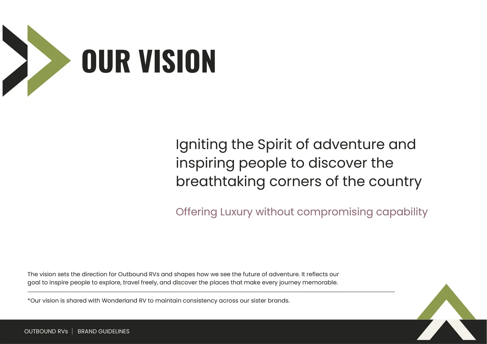
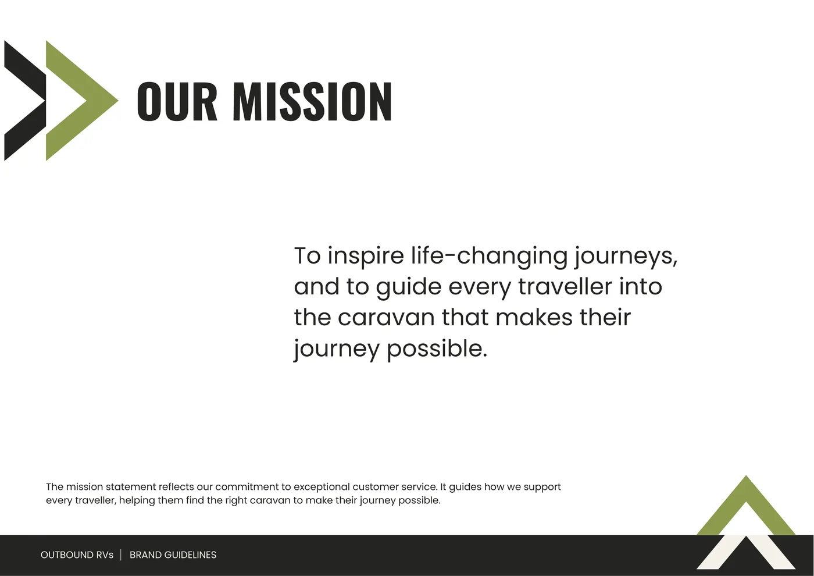
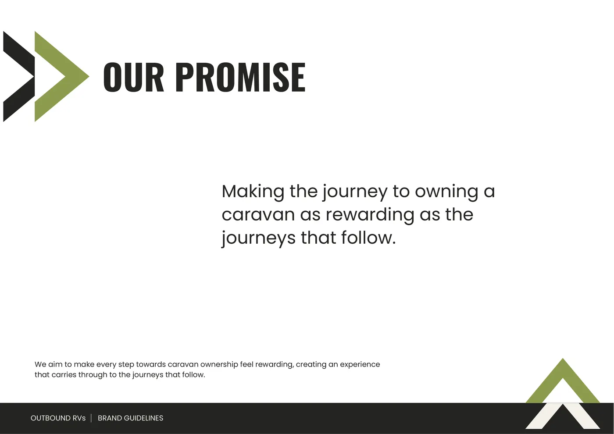
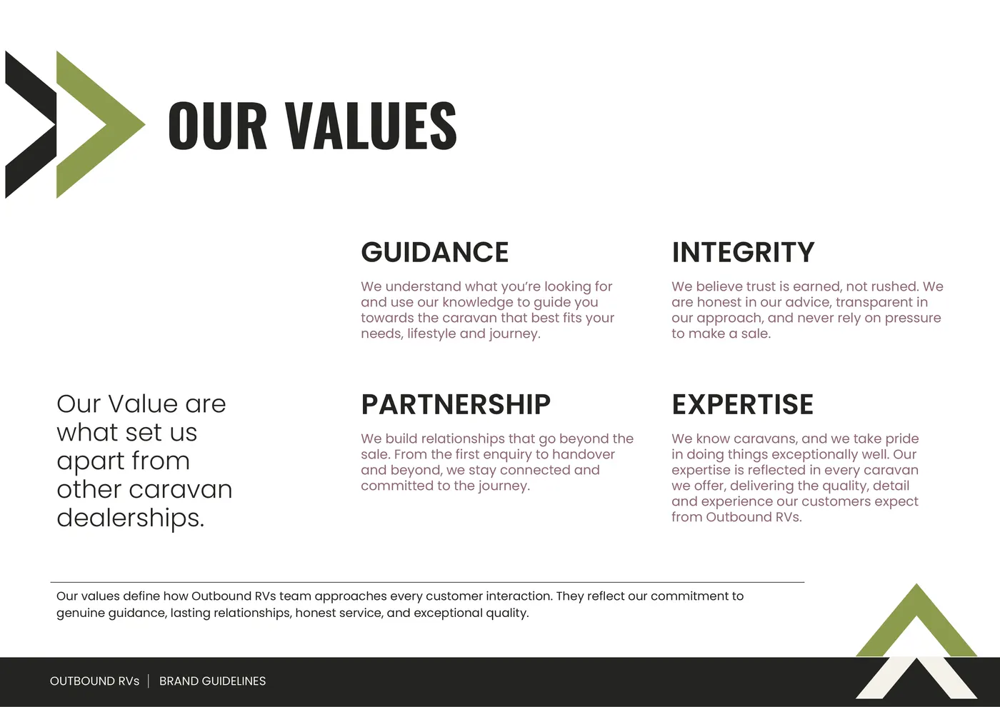
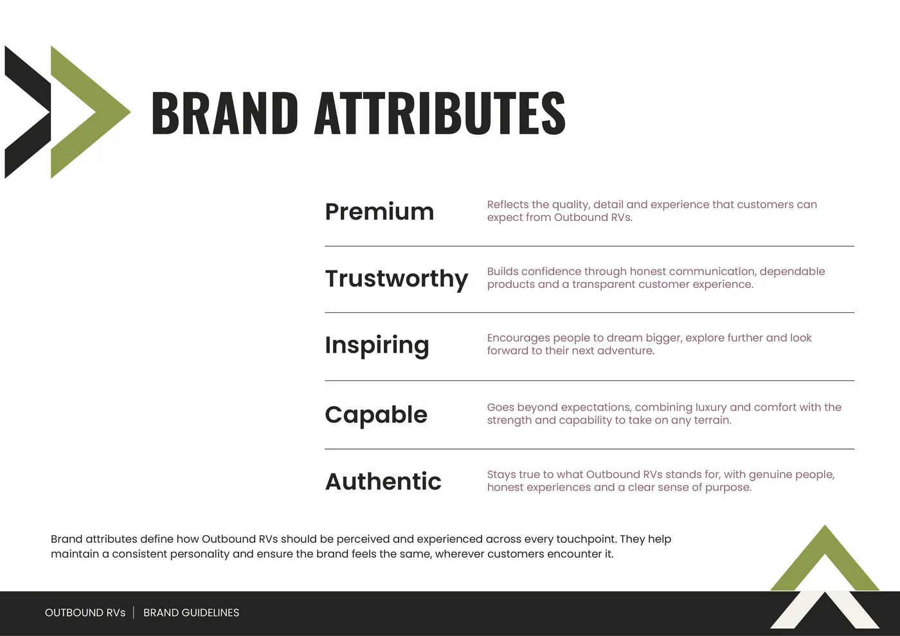
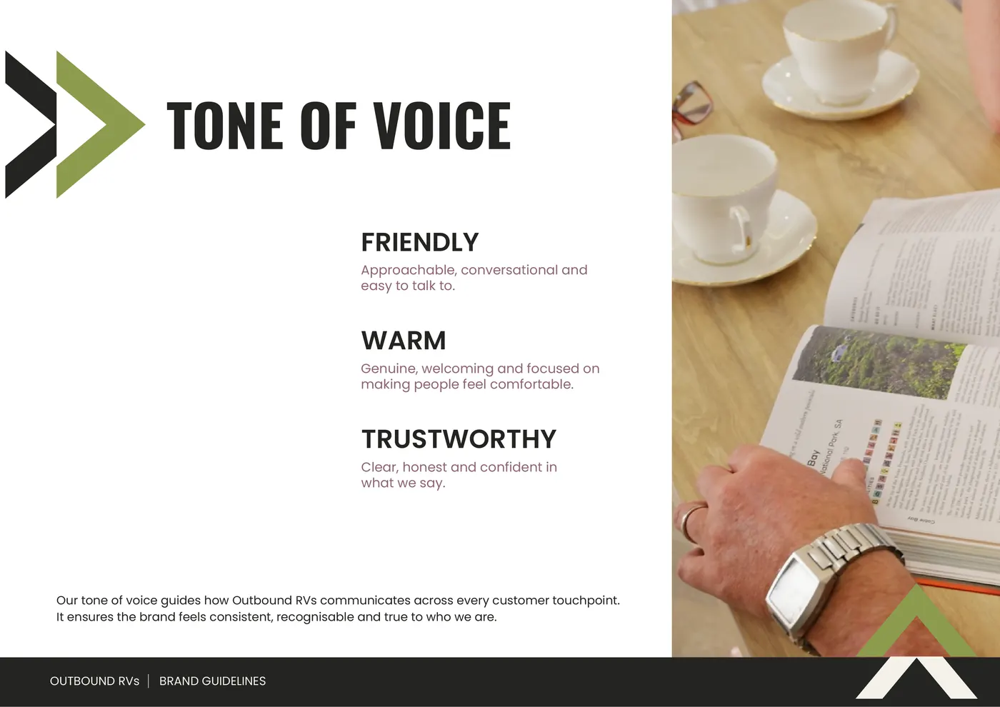
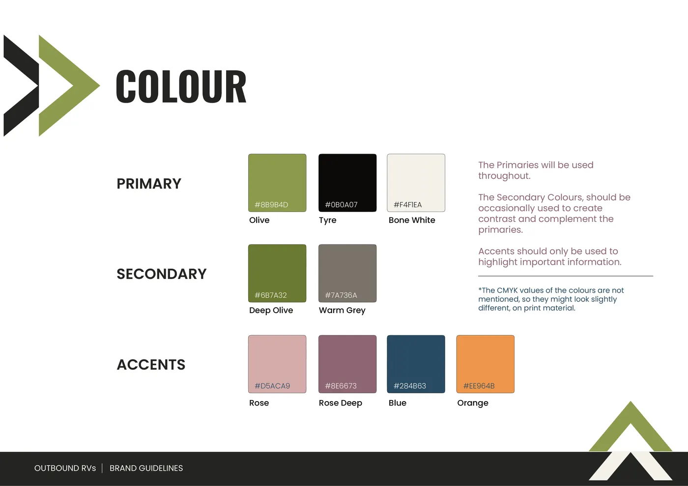

Luxury without compromising capability
Positioned between rugged and premium, on purpose, and as the expert retailer beside a manufacturer.




Given by the directors, then sharpened
The directors’ own four values were good but all about conduct. We approved Guidance, Integrity, Partnership and Expertise on 4 September.



A value is only real if it can make you turn something down.
That is why the fourth value is Expertise, not Craftsmanship. Craftsmanship describes the manufacturer’s work, and Outbound does not build the vans. Expertise describes the thing the dealership owns: knowing them.
One hue, two steps, defended on contrast
The colours do jobs. Primaries carry the page, secondaries add contrast, accents only highlight what matters.

Warm, not neutral
Neutral greys read cheap. A warm cast on both the dark and the off-white reads as chosen. Olive’s scarcity does most of the premium work.
A deeper olive
The brand olive carries white text at only 3 to 1. The deeper step reaches 4.7 to 1. One hue, two steps, not a new colour.
Logged, not hidden
White on light rose sits at 2.04 to 1. I chose it after testing alternatives, softened it for anyone who asks for higher contrast, and recorded it so nobody corrects it silently.
Decisions, with reasons
A dated log, kept as I went. A choice made in week two can still be defended in week ten.
- 29 Jul
Design’s job is lead volume
More sales is the business goal, but conversion depends on the sales team.So the lever design owns, and can be measured on, is leads.
- 29 Jul
Monochrome, with warm neutrals
Reads more luxurious than any colour scheme and lets the landscape photography supply the colour.It was chosen on instinct and later supported independently by the directors’ answers.
- 29 Jul
Avoid containers
Boxes fragment a page whose job is showing large vans.Whitespace, grid and rules carry the structure instead.
- 16 Aug
Accents only highlight
Blue and rose are the brand accents, used sparingly and never as a surface that competes with the photography.Scarcity is what keeps an accent meaning something.
- 18 Aug
Dark bands for reading, light for scanning
The hero, the owner quote and the footer stay dark in both modes.They are where a visitor slows down. Inverting everything would flatten the page.
- 1 Sep
The Guided Journey element system
A line as structure, a diamond as waypoint, the logo mark as anchor.Four fixed rules let compositions vary without losing the identity.
- 4 Sep
“We Are Not” stays internal
It is the sharpest page in the guidelines, but publishing four negatives reads as a defence.Saying we are not price driven makes the reader think about price.